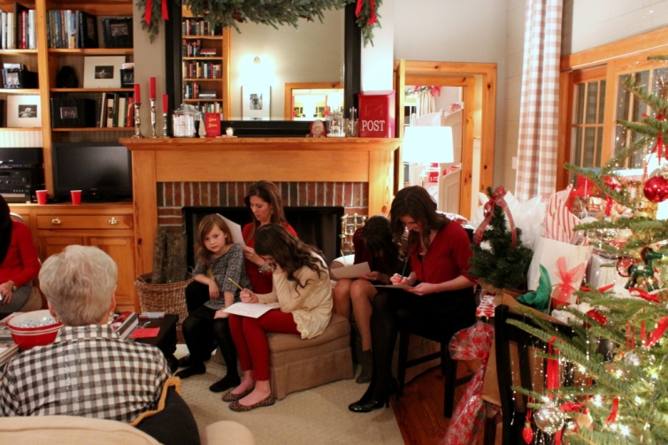
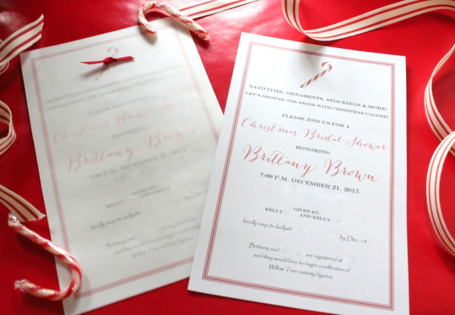

.png)
.PNG)
.PNG)
.PNG)
.PNG)
.PNG)
.JPG)
.JPG)
.PNG)
.PNG)


The first of our daughter’s close friends is getting married in February, so naturally we wanted to give her a bridal shower. All of the girls are still dealing with college schedules, so we had to find a date during their various breaks to fit it in between their exams, our sons arriving back home, and Christmas. A dear friend of mine (who’s also named Kelly 🙂 ) helped to host the party with me on the Monday of Christmas week. Between various emails among everyone we came up with the theme for the party – a Christmas bridal shower. What could be more perfect for a December night? 🙂
Once that was decided, I got to work on the invitations. Using plain stationery from Target, I came up with a design that had a “classic Christmas” feel with a simple candy cane at the top, and it was easily printed on our printer here at home. To dress it up some, I added a sheet of vellum over it, attaching it with thin red ribbon run through holes around the peppermint design. (The photograph is not showing it very well here. 🙁 )
(I edited out the personal info for privacy reasons.)
These postage stamps added the perfect finishing touch.
Here is a mock-up for you to see the envelopes I lettered. I tried to write in a style to match the script font I used on the invitation.

I knew I wanted to tie into the candy cane on the invitation with the party favors. At first, I was going to do small bags of peppermint bark, but with 30 guests coming, it was going to be too expensive (and too time consuming) to make. But then I found this recipe for Peppermint Bark cookies which worked out great. After hunting for the chocolate wafer cookies in a zillion stores, our daughter whipped up a bunch of them for the bags.
They made a nice little party favor for the Christmas shower.
We displayed them in a jar by the front door for guests to take as they left.
With the busy-ness of the holidays, Kelly and I decided on a simple menu of assorted cheesecakes, nuts, cheese straws, and strawberries – all purchased from the grocery. We served it on the vintage Colony Harvest snack plates that my mother-in-law gave me a number of years ago.
I forgot to take a photo of the punch bowl with the matching punch cups. 🙁 You can see that I have 30 of these snack sets and tons more of the pieces. I believe my mother-in-law acquired them through the redemption of S&H Green stamps back in the 1960’s.
Alright, back to the party now. 🙂
The guest list was a fun mix of the bride’s friends and their mothers – a family affair! Here is the beautiful bride with her pretty mother and sister.
I am not usually a fan of silly games at showers, but I found something that I thought would be fun for everyone to do before the bride opened the gifts – especially since so many of the bride’s close friends were there.
I printed it out from here on cardstock and had 30 things to write with ready for the “test.” Her mom opted out since she felt she would win, and 2 of the bride’s close friends got the most correct. (This is only a portion of the guests. More are behind the sofa, in the playroom, and beside me in the dining room.)
Of course the winners each graciously gave their prize to the bride. And then the bride had the fun of opening all the gifts. 🙂
She received so many pretty Christmas things…trees, ornaments, Christmas china, door decorations, nativity pieces, and more. This is just part of what she was given.
After all the presents were opened, the guests continued to socialize, and then they left for the night. But the bride and several of her friends stayed over at our house for a girls’ night out together with our daughter that night. (They have all been friends since elementary school.) I had wanted to take a photo of them dressed up for the party, but they managed to get into their comfortable clothes before I had a chance to snap a picture. So here they are in their casual wear. 🙂
It was a fun night, and I was thrilled that my friend, Kelly and I were able to give the bride her very first bridal shower with her friends and family.
I think this brings us to a close on all the December happenings around here. 2015 has been a very busy – very good year for me and my family, and I am so very thankful for all of our blessings. I am also thankful for all of you very gracious readers who take time out of your busy schedule to drop in for a visit here. You are the reason I keep coming back to write for Talk of the House. I hope your 2016 will be a very wonderful year – filled with good heath, lots of good food, and many good times spent with family and friends.
Thank you and Happiest of New Years to you! 🙂


.PNG)
Such a beautiful Bridal Shower. Can I ask how you learned Calligraphy? Did you teach yourself, or did you take classes for it? Thanks!
——————————————————————–
Thank you Kaye Ann. I taught myself lettering by just playing around with a pen and practicing. While my mother paints as her art, lettering is mine. (I can’t paint worth a flip!)
Kelly
How special to be able to host the bridal shower for your daughter’s friend. I always love seeing your party details. I bet they had the best time at their “sleepover!” 🙂 Smart decision to keep the menu simple this time of year. Those peppermint bark cookies look delicious! I will definitely try the recipe. I love your milk glass. My family has some also and we used milk glass, including a few family pieces for my daughter’s shower a few years ago. 🙂
What a lovely party, Kelly. I am sure the bride and her family were thrilled with the Christmas themed gathering. And, now she has such a head start for her first married Christmas! Wishing you and yours all the best in the coming year.
I absolutely love your calligraphy, it’s beautiful! Where did you learn it or are you self taught? The shower was adorable with all your personal touches. I always look forward to your blog! Hope you and your family a very Happy New Year!
————————————————————————
Thank you for your sweet comment Cindy! I thought the bridal shower turned out very nice. As far as the calligraphy goes, I just taught myself many years ago…bought a pen and a little book with practice paper. I practiced and learned the Italic style of Calligraphy. From there I just played with letters and styles.
Kelly
That was so kind of you and your daughter to host such a nice shower, what a fun night! I hope you enjoy all the wonderful things 2016 has in store for you and your family. Happy 2016!!!
Happy 2016, Kelly!
Beautiful celebration!
I know your mother-in-law enjoyed seeing you use the dishes.
Thanks for sharing your Mitford map and keeping the Piano Guys before the readers. Good advertisement for all to make your blog.
Enjoy a happy new year!
Kelly, this is a lovely shower idea! Thanks for sharing. I wanted you to know I followed your scripture advent verses the 1st through the 25th. Every Christmas I try keep myself focused on Jesus, and your daily devotional was such a blessing! Hope you and your family have a blessed and joyous New Year!
———————————————————————-
How wonderful Jill! I am so glad that the scriptures were a blessing for you. Best wishes to you and your family as well. May 2016 be your best yet! 🙂
Kelly
Kelly,
I like the way you throw a shower. It all looks so nice. Thanks for sharing it with us. Take care and Happy New Year!
———————————————————————
Thank you Dawn! And thank you for always being so encouraging in your comments. I appreciate you!
Have a super happy new year in 2016!!
Kelly
Thank YOU for a great year. Coming to your blog is like a mini vacation in the middle of my day. I just love your style and your attention to detail. Such an inspiration. Looking forward to 2016. Happy New Year!
———————————————————————
Gosh thanks Barb! I am glad that I could give you a break in your days. Thank you for following along this year. Happiest of new year wishes to you!
Kelly
Oh what fun to have a Christmas themed shower and receive so many “Chritmasy” gifts, as the bride to be begins to prepare for her own home and family. Delightful! My favorite part of this post is your collection of milk glass. I don’t rememeber seeing that on any of your posts before. Have I missed any? My mother and I both like milk glass. I have a small collection, with a couple of lovely pieces that beonged to my grandmother. Happy 2016!
————————————————————————
It WAS fun Dana! No, I have not shown any of the milk glass before. It is not something I really use, except for “girl-y parties.” 🙂 (We always seem to have a bunch of guys around here.) Good luck with your collection, and how wonderful to have some of your grandmother’s pieces!
Happy 2016 to you too!!
Kelly
Kelly….what a fun idea. I would have LOVED a Christmas shower as a young bride! I have been following your blog for just a few months and I LOVE it!! You have been a great inspiration to me. LOVE the peppermint cookie idea….will definitely be trying those out. My daughter and I made your Peppermint Cheesecake Dip for Christmas and it was a big hit! Happy New Year!
———————————————————————-
Thank you Cindy! I would have loved a Christmas shower too. Thank you for following along on the blog, AND for taking the time to leave your sweet comments. I am so glad you tried out the dip. Isn’t it just yummy?!
I hope 2016 brings you a year of many good things. 🙂
Kelly
Really nice bridal shower! I love the invitations–I must learn how to print fancy ones
like that out on the printer. Perfect little touches make for a really special day to remember.
Wishing you a healthy and happy 2016!
Blessings,
Anita
———————————————————————
Thank you Anita. I thought the invitations turned out nicely. Best wishes for your new year too!
Kelly
Kelly,
What a perfectly delightful shower. I loved the invitations and party favors. Those cookies looked so yummy. I’d love the recipe sometime, I could see making those for little presents for neighbors and friends next Christmas. You can never plan too far ahead for Christmas, right? 🙂
Enjoy this New Year’s Eve and I look forward to your posts in the new year.
xo,
Karen
———————————————————————-
Thank you so much Karen. Just follow the link in the post for the recipe for those cookies. They are super easy to make and turn out great. The pink ones used andes baking chips instead of the crushed peppermint. I am right there with you on planning for the next Christmas. I have already started filling in my notebook with ideas! 🙂 Enjoy your New Year’s Eve too. Here’s to a happy and healthy new year for you and your family.
Kelly
Happy New Year to you! Thank you for your blog and thanks for the music!
———————————————————————
You are quite welcome Peggy. 🙂 Happy New Year to you too!
Kelly
Your shower was so cute. What a perfect theme. And I am drooling over your milk glass collection. I have been acquiring pieces at garage sales and thrift stores to use in our lake home. You have an impressive collection.
———————————————————————
I’m so glad you liked the shower Sue. That collection is large thanks to my mother-in-law. I think she must have collected every piece they offered with S&H green stamps! 🙂
Happy New Year!
Kelly
What a sweet shower! Love how you pulled the theme throughout the shower & into every little detail!! The bride will treasure this first shower! My husband and I were married in December so Christmas has always been an even more special & magical time for us! I’m so happy that I found your lovely blog, Kelly! Can’t wait to see where 2016 takes us! Gods best blessings to you and your family in this coming new year! Happy New Year!!
———————————————————————-
Oh a December wedding for you! I know that had to be beautiful! Thank you so much for reading the posts here Char. I am glad you found Talk of the House too. 🙂 Many blessings for your 2016! Hope it is a wonderful year for you and your family.
Kelly
Hi Kelly. Love the idea of a Christmas Shower, how much fun would that be! The invitations are perfection, absolutely precious. So good of you, Kelly and the guests to take time to honour Brittany during the busiest week of the year. Happy New Year!
How exciting! My daughters are also in their early 20s so I imagine this will be in my short range future as well! Great theme!
Love the idea of a December bridal shower. It seems a wonderful time of year to get family and friends together for a happy affair.
Lovely way to end the day by viewing the special Christmas Bridal Shower. Looked liked everyone was relaxed and enjoyed being together. How very gracious of you and your friend host the party during a very busy week! Everything was already decorated for the theme and how nice to be prepared in this way!! You know what they say about busy people!! Getting it done!:) Blessings to the sweet bride to be– and February will be here before they know! Time passes quickly!! Count down to New Yesr’s Eve!! Oyster stew makings in the house( my husband makes the best) and now to get the corned beef fixings for NY’s Day!! Watching the Times Square Ball and reflecting on the past year with hopes sand prayers for a more peaceful and grateful world for all people!!
Looks like such a fun bridal shower. I’ve never been to one that close to Christmas, but such a great time to honor the bride. Thanks for sharing The Piano Guys’ video. I love their music! Wishing you and your family a Blessed New Year!
Absolutely love the Christmas theme! What a great memory for all the girls. You are the hostess with the mostess!
Happy 2016!
What a wonderful and fun evening of precious memories! Have a glorious New Year!